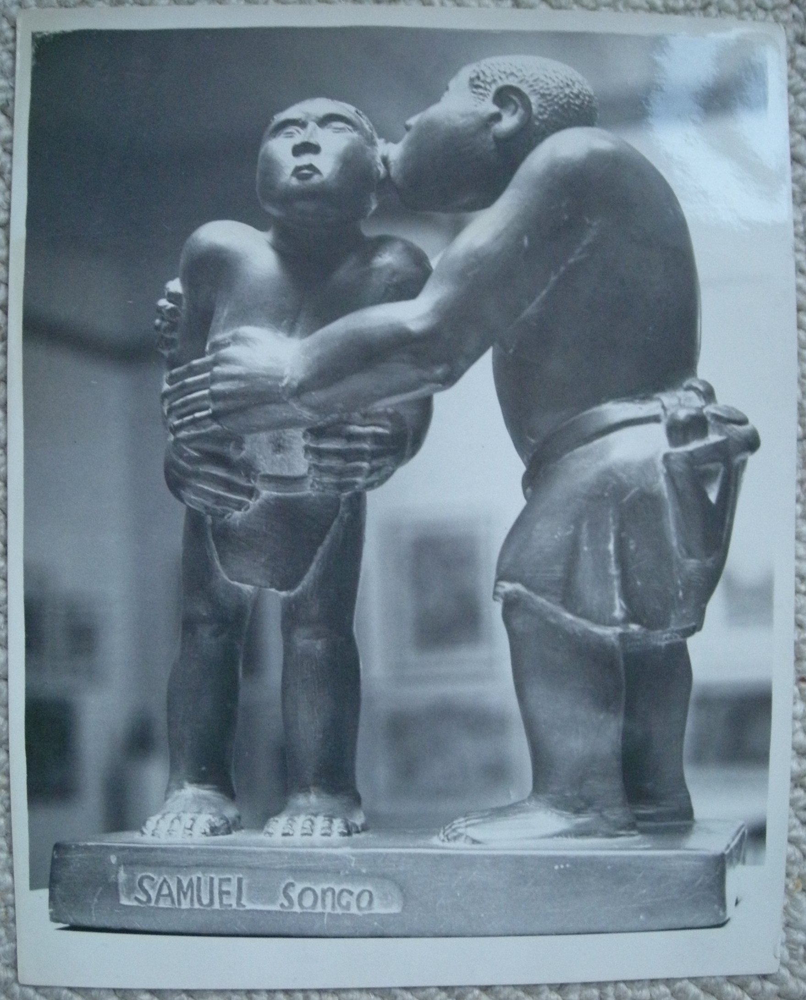

Sam Songo
1929–1977
Artist Biography
Samuel Songo was born in Bulawayo, Zimbabwe (then Rhodesia). Disabled with a crippled arm and wheelchair bound, he was taken in by the Cyrene Mission School. This pioneer artist and missionary school was set up by Edward Paterson in 1939 and became influential in the development of southern African art; here Songo’s artistic talents began to flourish. In 1946 Songo was the chief subject of a British documentary film entitled “Pitaniko, the film of Cyrene”. He was later to take over the Cyrene workshop. In the mid-1950s Frank McEwen, a fiercely intellectual British artist, helped establish the National Gallery of Rhodesia (later of Zimbabwe). McEwen sought to explore the essence of African art and so established an unofficial school at the gallery where the most talented students were encouraged to create works independent from Western artistic traditions. Songo – although remaining based at Cyrene - was one of the core artists of this group, known as the Workshop School, working in a semi-abstract organic style reflecting concepts drawn from Shona mythology.

Untitled, 1954